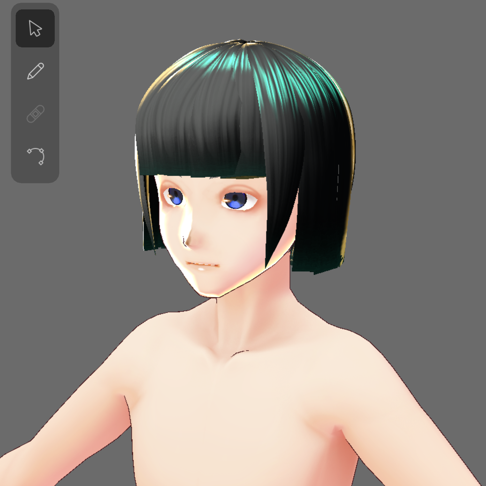
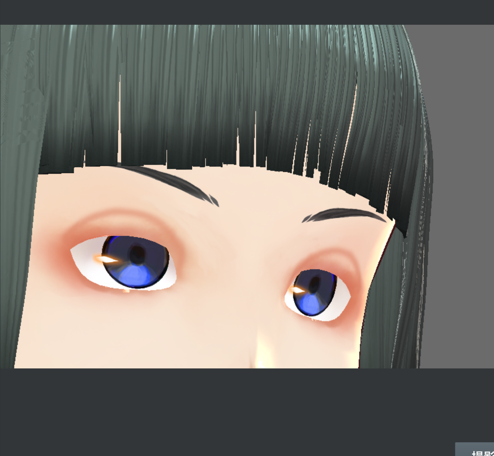
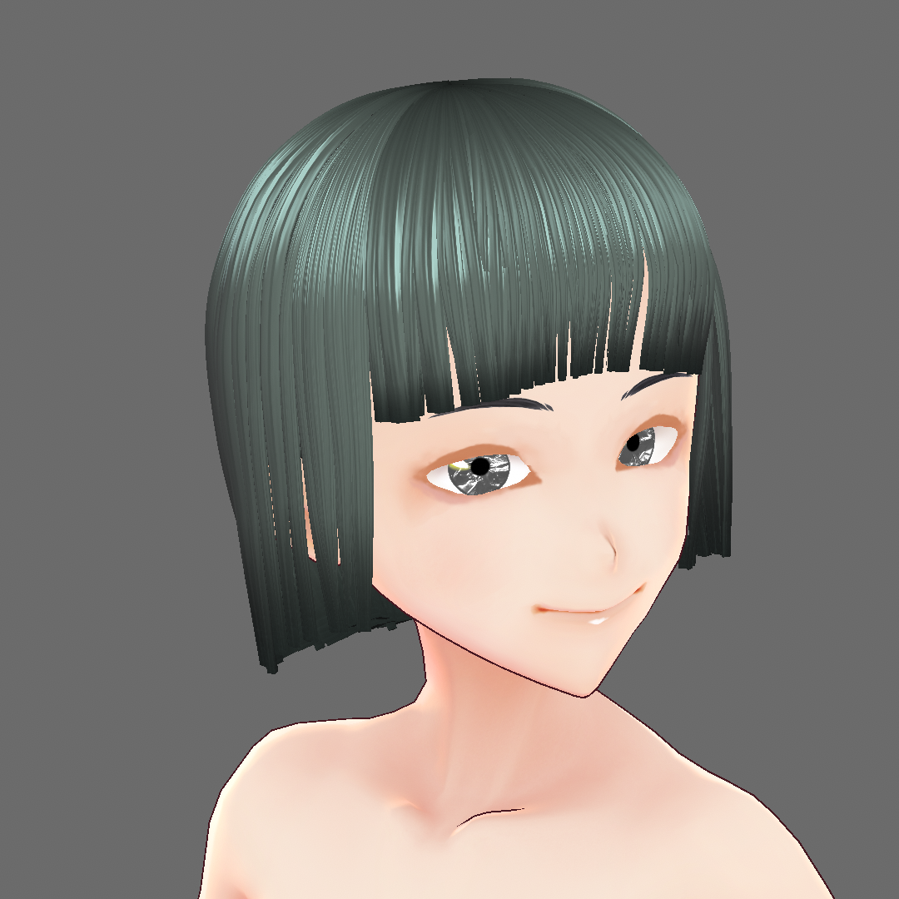
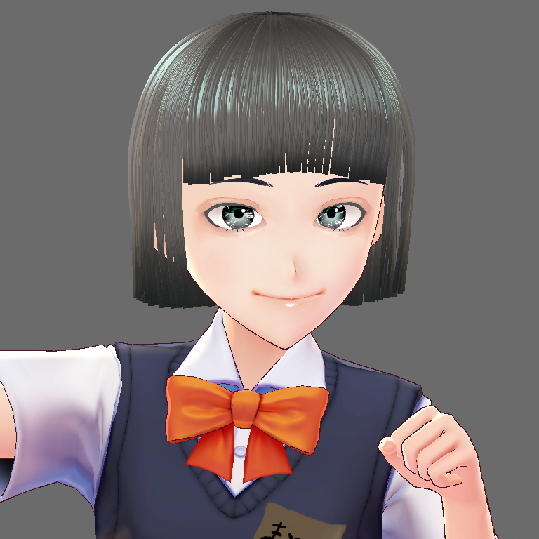

完成品を作る
「新しいとは何か、を考える」という授業があった。
授業の中では「新しいとは、『変わる同じもの』である。」という一つの推測（仮説）にたどり着いた。
なので今回はその完成品として、「変わる同じもの」を一つ作ってみることにした。
バーチャルの世界でまとうことができる、3dモデルを作った。
私は、これを新しい「服」と言えると思った。
服を着る私は変わらない。
「変わる同じもの」である。




VRoid Hub